画像にリンクがはってあるものは、クリックすると別窓で大きめサイズが表示されます。
[サウンソ]
所在地；コンロン11時方向 |
   |
[サビタ]
所在地；アインベフ(97,167) |
| 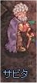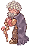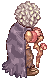 |
[サヨゥムン]
所在地；コンロン村長の家2F |
   |
[三ヶ国同盟の将校]
所在地；プロンテラ城内 |
| 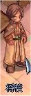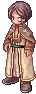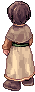 |
[サングファヨン]
所在地；コンロン村長の家1F |
   |
[サンファヨン]
所在地；コンロン中央やや左上 |
    |
[志願兵]
所在地；リヒタルゼン・レッケンベル本社2F |
| 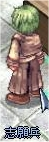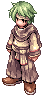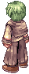 |
[志願兵]
所在地；リヒタルゼン・レッケンベル本社2F |
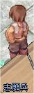 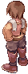 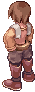 |
[志願兵]
所在地；リヒタルゼン・レッケンベル本社2F |
| 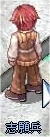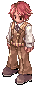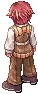 |
[志願兵]
所在地；リヒタルゼン・レッケンベル本社2F |
| 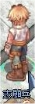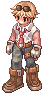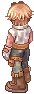 |
[志願兵]
所在地；リヒタルゼン・レッケンベル本社2F |
| 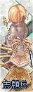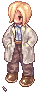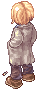 |
[志願兵]
所在地；リヒタルゼン・レッケンベル本社2F |
| 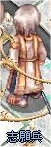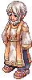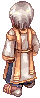 |
[志願兵]
所在地；リヒタルゼン・レッケンベル本社2F |
 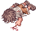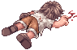 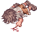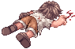 |
[志願兵]
所在地；リヒタルゼン・レッケンベル本社2F |
| 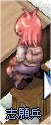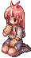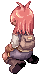 |
[シガイツ]
所在地；リヒタルゼン・レッケンベル本社2F |
 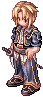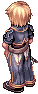 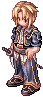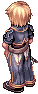 |
[侍女]
所在地；アインブロック・カペルタの屋敷内 |
| 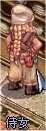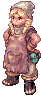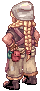 |
[シズノ]
所在地；フェイヨン弓手町内 |
| 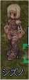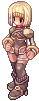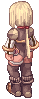 |
[シドクス]
所在地；アインブロックホテル2階 |
| 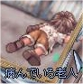 |
[ジャック]
所在地；モロク秘密の酒場前 |
| 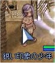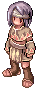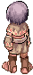 |
[主婦マリエヌ]
所在地；プロンテラ宿屋内(207,191)付近 |
| 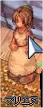 |
[ジュリアン]
所在地；フィゲル8時方向建物（hugel:52,94）内 |
| 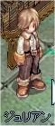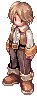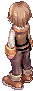 |
[商人マルクハンセン]
所在地；フェイヨン建物内 |
 |
[少年]
所在地；カピトーリナ修道院(prt_monk:226,257) |
 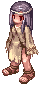 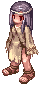 |
[少年]
所在地；ラヘル5時方向(243,37) |
| 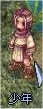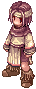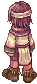 |
[白髪混じりの議員]
所在地；リヒタルゼン・レッケンベル本社1F右(32,22)付近 |
| 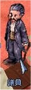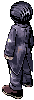 |
[シリア]
所在地；フィゲル1時方向建物内 |
[シルネ]
所在地；ジュノー建物（244, 144）内 |
   |
[ジレット]
所在地；フィゲル12時方向建物内 |
[新生ギルドマスター]
所在地；プロンテラ握手像右(prontera:167,281) |
[ゼティ]
所在地；アーチャー協会（フェイヨン弓手町）建物内 |
[セピト]
所在地；モロク5時方向旅館内2F奥 |
[ゼルメト]
所在地；アインブロック工場内(67,242) |
 |
[ソルブン]
所在地；コンロン旅館1F |
   |
back
(c) Gravity Co., Ltd. & Lee MyoungJin(studio DTDS). All rights reserved.
(c) GungHo Online Entertainment, Inc. All Rights Reserved.
当コンテンツの再利用（再転載・配布など）は、禁止しています。